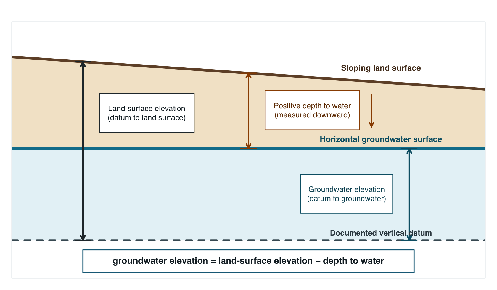

Preparing groundwater observations
preparing-observations.RmdThe package standardizes groundwater head in Z and
observation names in Name. Keep horizontal units, head
units, measuring-point corrections, and the vertical datum explicit in
project metadata. The synthetic examples do not claim a field vertical
datum.
Direct groundwater-elevation measurements
direct <- ps_make_points(
synthetic_wells,
x = "x", y = "y",
value = "gw_elevation",
name_col = "well_id",
crs = "EPSG:26916"
)
head(values(direct)[, c("well_id", "gw_elevation", "Name", "Z")])
#> well_id gw_elevation Name Z
#> 1 MW-01 166.65 MW-01 166.65
#> 2 MW-02 165.50 MW-02 165.50
#> 3 MW-03 171.45 MW-03 171.45
#> 4 MW-04 165.70 MW-04 165.70
#> 5 MW-05 169.00 MW-05 169.00
#> 6 MW-06 169.53 MW-06 169.53Positive depth to water plus a DEM
ps_potentiometric_points() applies:
Positive depth means below land surface. A negative value describes head above land surface, but users should verify that convention in the source record.

data("synthetic_dem", package = "potentiomap")
from_dem <- ps_potentiometric_points(
synthetic_wells,
x = "x", y = "y",
depth_col = "depth_to_water",
surface = synthetic_dem,
name_col = "well_id",
crs = "EPSG:26916"
)
head(values(from_dem)[, c("Name", "surface_elevation", "depth_to_water", "Z")])
#> Name surface_elevation depth_to_water Z
#> 1 MW-01 185.1316 18.48 166.6516
#> 2 MW-02 183.8884 18.39 165.4984
#> 3 MW-03 190.4255 18.97 171.4555
#> 4 MW-04 184.3528 18.66 165.6928
#> 5 MW-05 189.0185 20.02 168.9985
#> 6 MW-06 188.4036 18.87 169.5336The raster and wells must represent compatible horizontal coordinates. Surface elevation and depth to water must use the same vertical units.
Depth to water plus an elevation column
from_column <- ps_potentiometric_points(
synthetic_wells,
x = "x", y = "y",
depth_col = "depth_to_water",
surface_col = "surface_elevation",
name_col = "well_id",
crs = "EPSG:26916"
)
head(values(from_column)[, c("Name", "surface_elevation", "depth_to_water", "Z")])
#> Name surface_elevation depth_to_water Z
#> 1 MW-01 185.13 18.48 166.65
#> 2 MW-02 183.89 18.39 165.50
#> 3 MW-03 190.43 18.97 171.46
#> 4 MW-04 184.35 18.66 165.69
#> 5 MW-05 189.02 20.02 169.00
#> 6 MW-06 188.40 18.87 169.53Depth to water plus separate surface-elevation points
Separate surface observations are matched by name when possible; otherwise the released function interpolates surface elevation to the depth points with IDW.
data("synthetic_surface_points", package = "potentiomap")
from_separate <- ps_potentiometric_points(
synthetic_wells,
x = "x", y = "y",
depth_col = "depth_to_water",
surface = synthetic_surface_points,
surface_col = "surface_elevation",
name_col = "well_id",
surface_name_col = "point_id",
crs = "EPSG:26916",
idw_power = 2
)
head(values(from_separate)[, c("Name", "surface_elevation", "depth_to_water", "Z")])
#> Name surface_elevation depth_to_water Z
#> 1 MW-01 185.13 18.48 166.65
#> 2 MW-02 183.89 18.39 165.50
#> 3 MW-03 190.43 18.97 171.46
#> 4 MW-04 184.35 18.66 165.69
#> 5 MW-05 189.02 20.02 169.00
#> 6 MW-06 188.40 18.87 169.53This pathway adds a surface-interpolation assumption. Record the source-point network and do not treat the calculated elevation as more precise than its inputs.
Data frame, sf, and terra inputs
wells_sf <- sf::st_as_sf(synthetic_wells, coords = c("x", "y"), crs = 26916)
from_sf <- ps_make_points(
wells_sf,
value = "gw_elevation",
name_col = "well_id"
)
c(class = class(from_sf)[1], crs = crs(from_sf, proj = TRUE), rows = nrow(from_sf))
#> class
#> "SpatVector"
#> crs
#> "+proj=utm +zone=16 +datum=NAD83 +units=m +no_defs"
#> rows
#> "32"
wells_vect <- vect(synthetic_wells, geom = c("x", "y"), crs = "EPSG:26916")
from_terra <- ps_make_points(
wells_vect,
value = "gw_elevation",
name_col = "well_id"
)
head(values(from_terra)[, c("Name", "Z")])
#> Name Z
#> 1 MW-01 166.65
#> 2 MW-02 165.50
#> 3 MW-03 171.45
#> 4 MW-04 165.70
#> 5 MW-05 169.00
#> 6 MW-06 169.53
data.frame(
pathway = c("direct head", "depth + DEM", "depth + column", "depth + separate points", "sf", "terra"),
observations = c(nrow(direct), nrow(from_dem), nrow(from_column), nrow(from_separate), nrow(from_sf), nrow(from_terra)),
finite_Z = c(sum(is.finite(values(direct)$Z)), sum(is.finite(values(from_dem)$Z)),
sum(is.finite(values(from_column)$Z)), sum(is.finite(values(from_separate)$Z)),
sum(is.finite(values(from_sf)$Z)), sum(is.finite(values(from_terra)$Z)) )
)
#> pathway observations finite_Z
#> 1 direct head 32 32
#> 2 depth + DEM 32 32
#> 3 depth + column 32 32
#> 4 depth + separate points 32 32
#> 5 sf 32 32
#> 6 terra 32 32Assigning a CRS declares what coordinates already mean; transforming a CRS recalculates coordinates. See input formats and coordinate systems before interpolating field observations.